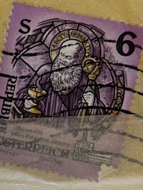
| SOURCE | TITLE| IMAGE MATCH | click to source page |
| eBay | Specimen, Austria Sc1601 Stained Glass, Mariastern-Gwiggen Monastery | eBay | 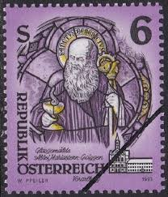 |
| eBay | Austria - 1993 - 6Sh - Trappist Abbey - Stift Mariastern in Vorarlberg - #17778 | eBay | 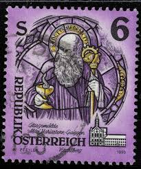 |
| eBay | Austria - 1993 - 6Sh - Trappist Abbey - Stift Mariastern in Vorarlberg - #17780 | eBay |  |
| Find Your Stamps Value | Monastery of Admont: Detail of abbesse's crosier, St. Gabriel Abbey, Styria 1s Multicolored stamp price, value | 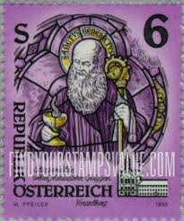 |
| Todocolección | austria. abadías y monasterios. 1993. yt-1937. - Buy Stamps from other American countries on todocoleccion |  |
| iStock | Gibraltar Galileo Galilei Postage Stamp Stock Photo - Download Image Now - Galileo Galilei, Adult, Astronomer - iStock | 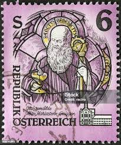 |
| Dreamstime.com | Vintage Austrian Stamp: St. Benedict Stained Glass from Mariastern Abbey Editorial Image - Image of graphic, gwiggen: 393685305 | 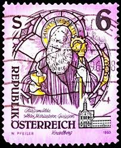 |
| eBay.de | Gestempelte Briefmarken aus Österreich als Einzelmarke mit Religions-Motiv online kaufen | eBay.de |  |
| stamp Austria 6.00 Schilling Saint Benedict Heiliger Benedikt österreich Briefmarke autriche timbre austria stamp Vorarlberg Abtei Kloster Stift postage monastery postzegel Oostenrijk اتریش تمبر bélyegek Ausztria طوابع النمسا znaczki Austria postzegel |  | |
| esam.ir | سری تکی اتریش 1993 میلادی ! | 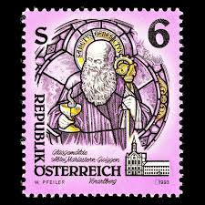 |
| Alamy | Recess printing hi-res stock photography and images - Alamy | 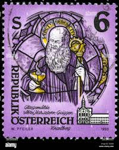 |
| Etsy | Tiny Square Stud Earrings Made From Genuine Vintage Postage Stamps - Osterreich Austria Postage Stamp 1983 Purple, Saint, Austria Monastery - Etsy |  |
| Dreamstime.com | Mariastern Abbey Stock Photos - Free & Royalty-Free Stock Photos from Dreamstime | 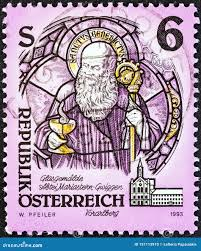 |
| Dreamstime.com | St. Benedict of Nursia, (stained-glass), Art from Monasteries Editorial Image - Image of europe, aged: 317957200 | 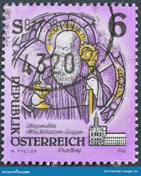 |
| HipStamp | Austria (Österreich), Scott #1601, used (o),1993, Saint Benedict, 6s | Europe - Austria, General Issue Stamp / HipStamp |  |
| Shutterstock | 5 Maria Stern Abbey Royalty-Free Images, Stock Photos & Pictures | Shutterstock | 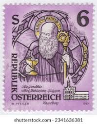 |
| تمبرستان | 8 عدد تمبر تمدن - یونان 1968 | 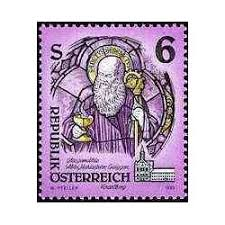 |
| eBay.de | Briefmarke: Serie Österreich: 6 Schilling | eBay.de | 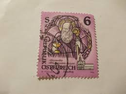 |
| esam.ir | تمبر خارجی المان کد 119 چاپ 1993 | 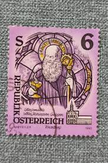 |
| Identify person in 30 year old stamp | 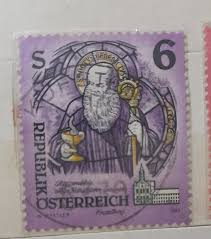 | |
| Shutterstock | 71 Cistercian Abbey Stamps Royalty-Free Images, Stock Photos & Pictures | Shutterstock |  |
| Dreamstime.com | 1,936 Letter Medieval Stamp Stock Photos - Free & Royalty-Free Stock Photos from Dreamstime - Page 8 | 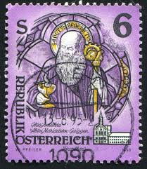 |
| iStock | Set Of Postage Stamps Stock Illustration - Download Image Now - Adult, Adults Only, Beer - Alcohol - iStock |  |
| sellosmundo.com | Sello: 5º CONFERENCIA PANAMERICANA - CONGRESO NACIONAL 4 CENTAVOS CASTAÑO de Chile America |  |
| Dreamstime.com | 117 Austria Monasteries Stock Photos - Free & Royalty-Free Stock Photos from Dreamstime |  |
| Osta | Leiunurk 1-195 Varia (209949087) - Osta.ee |  |
| Alamy | Mariastern gwiggen hi-res stock photography and images - Alamy | 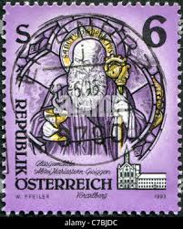 |
| ebid.net | MALTA, Nazju Falzon, Gorg Preca and Adeodata Pisani, yellow 2001, 6c, #2 on eBid Ireland | 224077216 |  |
| ahtaunus.de | Angebote aus privater Hand - Republik Österreich - Wert 2 S |  |
| 露天市集 | ½S¯¯ - 歐洲郵票(郵票) - 人氣推薦- 2026年2月| 露天市集 | 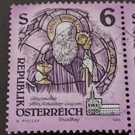 |
| esam.ir | یک قطعه تمبر خارجی نو اتریش طبق تصویر | 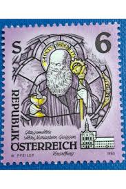 |
| kitantik | Efemera - 1993 Avusturya Trappist Manastırı Tam Seri MNH - kitantik - kitaLog |  |
| Todocolección | austria - 1980 - michel 1639 - usado - Compra venta en todocoleccion | 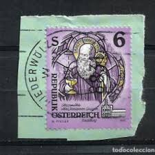 |
| Sohu | 邮说医学史51：西方修道院之父——圣本尼迪克特_搜狐网 |  |
| esam.ir | تمبر اتریش - سری کامل - 1993 - پستی | 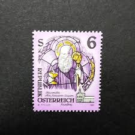 |
| Shopee蝦皮購物 | 奧地利共和國第一套常用郵票國土風光- 優惠推薦- 2026年2月| 蝦皮購物台灣 | 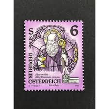 |
| sarsfieldsvirtualpub.com | Esatdigiwank | Sarsfield's | 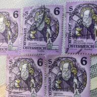 |
| Violity | Австрия. Религия. чистая марка (108119506) - купить на Violity |  |
| Etsy | Pequeños pendientes cuadrados de tachuelas hechos de sellos postales vintage genuinos - Sello postal Osterreich Austria 1983 púrpura, santo, Monasterio de Austria - Etsy España | 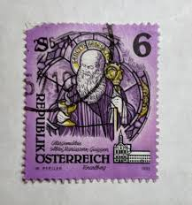 |
| Mensagens Com Amor | Dia de São Bento. Encante-se com o poder do santo! | 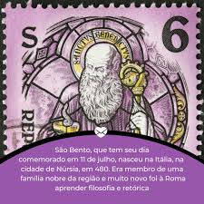 |
| Ay.by | Почтовые марки Австрии - купить, продать на Аукционах Ay.by. Страница 100 | 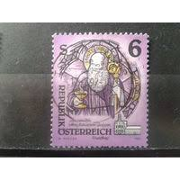 |
| Todocolección | austria °. año 1829-31 yvert 389. fin de serie. - Buy Antique stamps of Austria on todocoleccion | 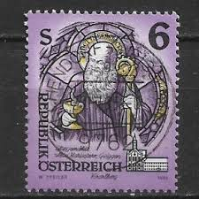 |
| Etsy | Austrian Art Glass - Etsy |  |
| Marktplaats | ≥ Oostenrijkse Postzegel - Sanctus Benedictus — Bankbiljetten | Europa | Eurobiljetten — Marktplaats | 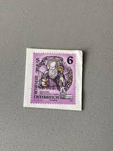 |
| Aukro.cz | VIETNAM od KORUNKY | Aukro | 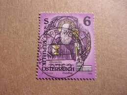 |
| eBay | Austria 2108,2110 (complete.Expenditure) mint/MNH 1993 spec | eBay | 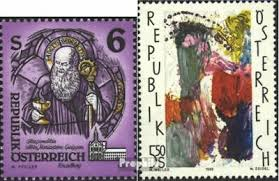 |
| ebid.net | Austria.SG2327 6s St.Benedict of Nursia,Mariastern Abbey,Gwiggen.Fine Used.Aug22 on eBid United States | 210153900 | 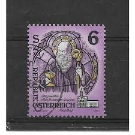 |
| eBay | 1993-95 Austria SC# 1601-1603 - Monasteries - 2 Different Stamps - Used | eBay | 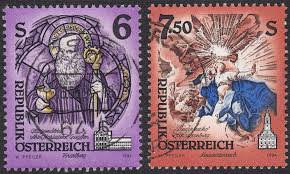 |
| Kleinanzeigen | Briefmarken Republik Österreich kleinanzeigen.de |  |
| eBay | Austria Postage: Lot 7 [1988-1995] - VF (Details below) - 2021 cat. value $16.80 | eBay | 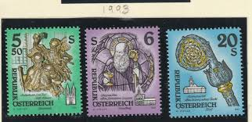 |
| Etsy | Stamp Art, Purple, Christmas, Stainless Glass, Austria, Large Used Stamps - Etsy | 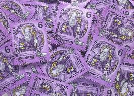 |
| Bob Shop | Germany & Colonies - GERMANY 1977, 10 Nov. CHRISTMAS STAMP, single, UH, CV+/- R 10.00 view scans was sold for 4.00 on 10 Jul at 09:46 by nfbooyse in Durban (ID:647300688) | 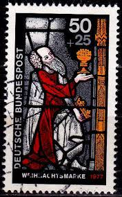 |
| PICRYL | 14 Christmas in germany in the 1970 s Images: PICRYL - Public Domain Media Search Engine Public Domain Search | 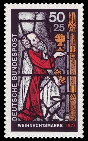 |
| eBay | Austria 1993 Monasteries Abbeys Statues Art Carving Glass Gold Artefacts, 3v MNH | eBay | 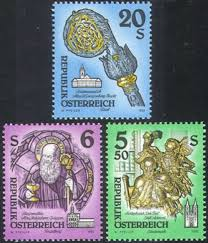 |
| Etsy | Kleine quadratische Ohrstecker aus echten Vintage Briefmarken - Osterreich Österreich Briefmarken 1983 lila, Heiliger, Österreich Kloster - Etsy.de | 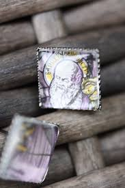 |
| Dreamstime.com | 02 09 2020 Divnoe Stavropol Territory Russia the German Postage Stamp 1977 Christmas Stamp King Kaspar Presents Gold To the Child Editorial Stock Image - Image of envelope, collection: 192653604 | 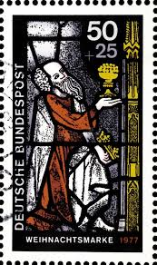 |
| The Itty Bitty Stamp Company | Germany Scott # B252a-B252c Mint Hinged – The Itty Bitty Stamp Company | 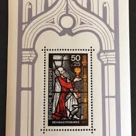 |
| Shutterstock | 1+ Hundred Gereon Royalty-Free Images, Stock Photos & Pictures | Shutterstock | 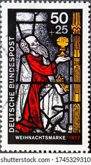 |
| eBay | ICOLLECTZONE Austria 564 VF used | eBay | 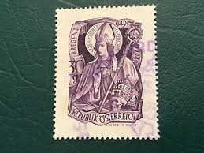 |